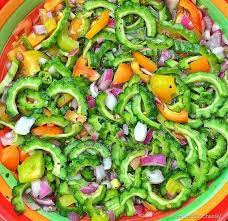

PinoyBoy's Cookbook
Ensaladang Ampalaya
Main Menu

Ensaladang Ampalaya is a bitter melon salad with fresh vegetables in a sweet and sour vinegar dressing
Ingredients
- 1 whole bitter melon or ampalaya
- 3 cloves Garlic
- 2 shallots
- 2 tomatoes
- 1 small ginger
- 2 pcs sili labuyo
- 2 tbsp sugar
- 1/4 cup vinegar
- 3 tbsp salt
Cooking Process
- Cut in half the bitterl melon to remove the seeds
- thinly slice the bitter melon and add the 3 tbsp of salt
- with the salt, squeeze out all the juices from the bitter melon, to remove the bitter taste
- wash the salt away with water and repeat the cleansing process with salt again 3 times
- dice your onions, garlic, tomatoes and ginger
- Mix all your ingredients in a bowl
- Add sugar and vinegar to taste
- Mix and toss
- place in a mason jar and let the bitter melon cook in the vinegar for a couple of minutes before serving, preferably overnight
Back to Main Menu